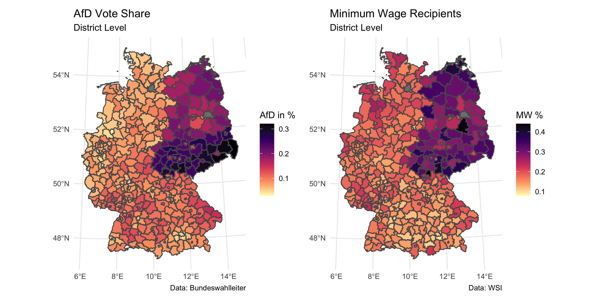

Paycheck Politics
Minimum Wage Dynamics and the Populist Vote
Introduction
Nestled in the heart of Thuringia, the German district of Sonneberg made headlines with a historic moment—it became the first constituency to elect a district administrator from the right wing Alternative for Germany (AfD) party. In an unexpected turn, Robert Sesselmann of the AfD won a closely contested run-off election against the conservative Christian Democratic Union (CDU), securing 52.8% of the votes. The results not only marked a seismic shift in local politics but sent shockwaves through the established political order (Schuetze 2023).
Intriguingly, Sonneberg also holds the distinction of having the highest percentage of minimum wage workers in Germany—44%. This paper aims to explore the connection between minimum wage recipiency and the support for right-wing populist movements, using Sonneberg as a focal point. Employing data from the WSI and the German Federal Election Officer in an Ordinary Least Squares (OLS) regression, the analysis reveals a significant correlation between these variables, even when accounting for other relevant controls.
Initially, I will review the existing literature regarding the economic determinants of populism in both economic and political research. Following this is a concise overview of the data utilized and the regression methodology employed in the subsequent section. Subsequently, the results will be presented, followed by an interpretation of these findings and their contextualization within existing research.
Literature Review
This analysis is related to several strands of existing literature on the economic drivers of populism.
Data
The analysis is based on data compiled by Pusch and Seils (2022) at the Institute of Economic and Social Sciences (WSI). They provide an estimate of the share of workers in a given district who will be affected by the increase in the minimum wage to €12 in October 2022 (henceforth minimum wage workers). The data basis for the number of minimum wage earners comes from the German Socio-Economic Panel (SOEP) and is regionalised using data from the German Federal Employment Agency (BA) and projected to the first of October 2022.
Pusch and Seils (2022) acknowledge some limitations of their results. The underlying SOEP data underestimate the number of marginally employed (mini-jobs), which make up a higher proportion of the workforce in West Germany. The estimate of these groups of people, most of whom receive a minimum wage, is therefore considered to be conservative, especially in Western Germany.
Alternative for Germany (AfD) results from the federal election on the 26.10.2021 are from the Federal Election Commissioner. Elections in Germany take place in constituencies (Wahlkreise), which are different from the standard counties (Landkreise). Therefore, the data is transformed by the election office, which does not lead to any loss of data.
Additional data on socio-economic and socio-demographic factors are provided by the regional statistical offices of the Länder. Most of these data are for the year 2022, with the exception of population density estimates, for which more recent data are not yet available.

Methodology
In this study, regression analysis serves as the primary methodological approach for investigating the relationship between minimum wage recipiency and support for right-wing populist movements. Regression analysis offers several distinct advantages that align with the goals of the research. Firstly, it provides a systematic framework for assessing the relationship between variables while controlling for potential confounding factors. By including relevant control variables in our regression models we can isolate the effect of minimum wage recipiency on voting behavior, thereby enhancing the internal validity of our findings.
The regression formula is as follows:
\[ \text{afd}_{i} = \beta_0 + \beta_1 \text{mw}_{i} + \sum_3^k\beta_k \text{controls}_{i,k} + \epsilon_{i} \]
where \(afd_i\) represents the vote share of the AfD in a given district \(i\) and \(mw_i\) the share of minimum wage recipients in this district.The variable \(controls_{i,k}\) comprise a number of different controls for the given district and \(\epsilon_i\) a standard error term.
Drawing from the literature review, the controls include a dummy variable representing East Germany to capture regional differences in political and economic contexts. Additionally, I include the unemployment rate and log GDP per capita as economic indicators, recognizing their significance in shaping individuals’ socio-economic outlook and political preferences. Sociodemographic factors are also accounted for, with variables such as average age, population density (logged), and the proportion of foreigners in the population. These sociodemographic controls are crucial for capturing nuances in local demographics and social dynamics, which may impact voting behavior independently of minimum wage recipiency.